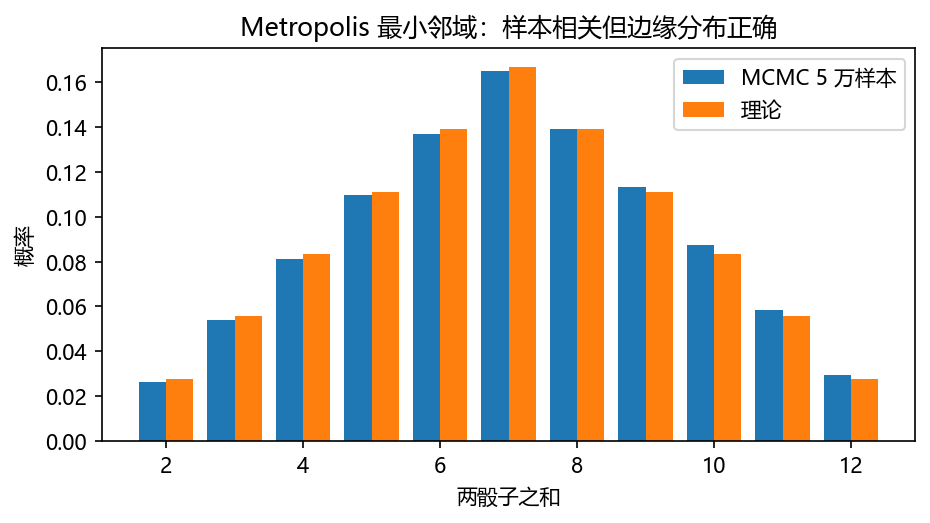
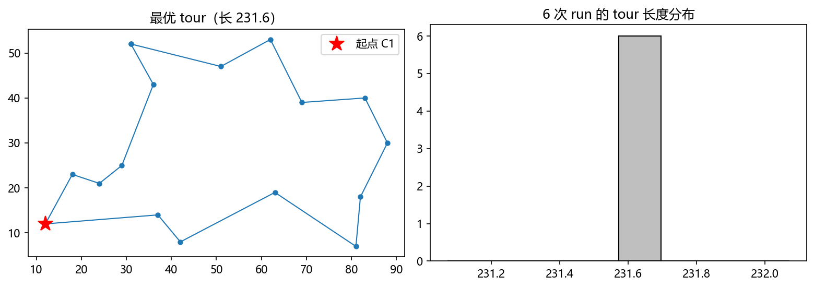
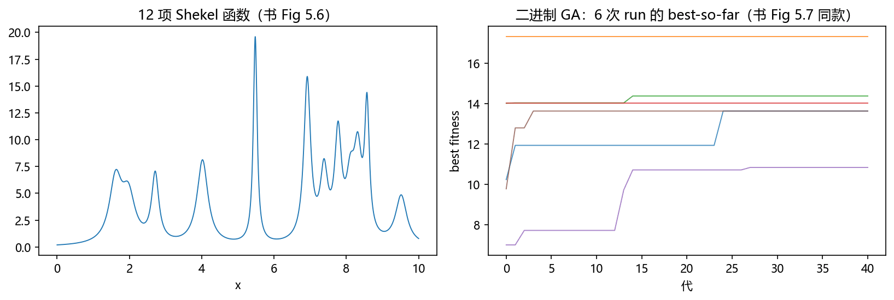
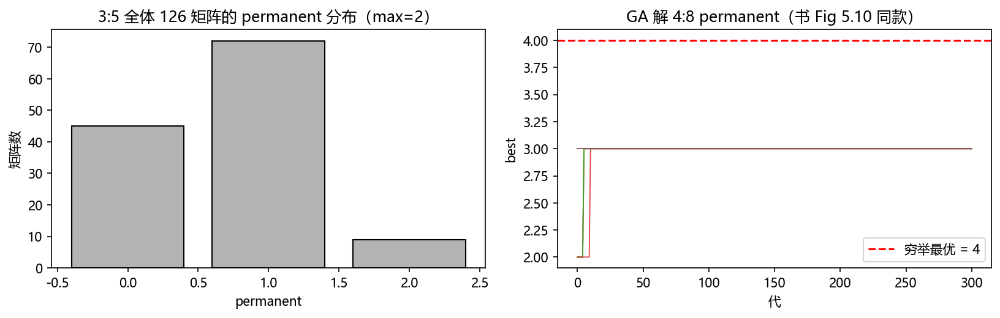
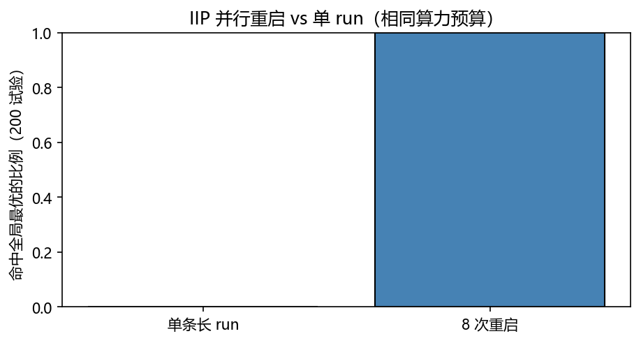

第 5 章 蒙特卡罗优化方法#
本章解决：把前四章的"随机性"从估计工具转成搜索工具。优化 = 给目标函数 \(f\) 与定义域 \(\Omega\)，找最小/最大的 \(x\)。难题两类：组合爆炸（TSP 有 \((n-1)!\) 条路线）与海量局部极小（数以百万计）——确定性算法要么复杂到依赖深刻问题结构，要么陷在局部。蒙特卡罗优化的两大主力：模拟退火 SA（§5.1–5.2，物理退火 + Metropolis + 冷却日程）与遗传算法 GA（§5.3–5.5，种群/变异/交叉/选择）。本章思想全部来自第 3 章（Metropolis、Boltzmann、遍历）与第 4 章（基本矩阵/命中时间）。 对照教材：Shonkwiler & Mendivil《Explorations in Monte Carlo Methods》第 5 章（pp.185–207，§5.1–5.5，公式编号 (5.1)–(5.5) 与笔记一致）。补充：Dunn & Shultis 未见 SA/GA 专章——本章以 Explorations 为主干自足。
| 关键词 | 事实 |
|---|---|
| SA 接受率 | \(h=\min(1,\ e^{-(f(y)-f(x))/k_BT})\)（式 (5.1)），把目标函数当能量 |
| 冷却定理 | Hajek：\(T_t=c/\ln(1+t)\)（式 (5.3)）且 \(c\) 足够大 → 渐近必达全局最小 |
| 实用冷却 | 逆对数冷却是理论保证；实务常用几何冷却 \(T_t=ab^t\)（式 (5.4)） |
| TSP 提案 | 路径部分反转 PPR；冷却参数由 \(\overline{\lvert\Delta E\rvert}\) 反推（书 Bays29：\(c\approx1000\)） |
| GA 三算子 | 变异（一元）/ 交叉（二元）/ 选择（多元）；GA 是齐次马尔可夫链 |
| 编码 | 二进制串=染色体；实数编码的变异=邻域均匀扰动、交叉=grainsize 交换 |
| permanent | \(\operatorname{perm}(C)=\sum_\sigma\prod c_{i,\sigma(i)}\)（无符号行列式）；#P-完全 |
| 并行重启 | IIP parallel（独立同分布并行）+ 重启是对付 niching 的王牌 |
本章代码：nb/ch05.ipynb（种子 2028）。8 个实验：Sandia 山 2-bit 退火（转移矩阵验证）、多维函数的两种冷却对比、16 城 TSP（书习题 8 数据）、二进制 GA 解 Shekel、实数编码 GA、permanent 递归精确计数、GA 解 permanent、IIP 并行重启。
实验索引
| # | 实验 | 对应 | 产出图 |
|---|---|---|---|
| 1 | Sandia 山 2-bit 退火 | 习题 1 | out-5-1.png |
| 2 | 冷却日程对比 | §5.1 | out-5-2.png |
| 3 | 16 城 TSP | §5.2 / 习题 8 | out-5-3.png |
| 4 | 二进制 GA 解 Shekel | §5.4 | out-5-4.png |
| 5 | 实数编码 GA | §5.4 | out-5-5.png |
| 6 | permanent 精确 + GA | §5.5 | out-5-6.png |
| 7 | IIP 并行重启 | §5.3 | out-5-8.png |
5.0 本章导图#
形式化：目标函数 \(f\) + 定义域 \(\Omega\)，找最小/最大的 \(x\in\Omega\)；约束限定可行（feasible）\(x\)。技巧：把不可行态留在域内、随运行加码惩罚——"带惩罚的搜索"常好过硬约束。组合问题（TSP 名气最大）至今无通用确定性解法 [Coo21]；第二类噩梦是局部极小数以百万计——就算会找局部最优，怎么找全局？
5.1 模拟退火（Simulated Annealing）#
源自统计力学（§3.5）：热系统退火到最低内能态——先高温再慢降温。计算系统同样可"退火"，目标：目标函数的全局最小。方法 1983 年提出 [KGV83]。
核心仍是 Metropolis 算法：\(\Omega\) 当相空间、目标函数当能量（故必须化成最小化问题）。从 \(x\) 提议到 \(y\) 的接受概率：
Metropolis 把 Boltzmann 分布 (3.21) 强加在解 \(x\)（现在叫 solutions）上，密度 \(e^{-f(x)/k_BT}/Z\)（式 (5.2)）——\(T\to0\) 时最小值点支配分布。剩余配料：提案机制在 \(\Omega\) 里洗牌，\(g_{xy}\) 须不可约 + 对称（对称可由 Hastings 放松，§3.6）。
**冷却日程（cooling schedule）**是另一半灵魂。温度必须随运行下降——怎么降是关键：
- 低温：高能解在 Boltzmann 分布下概率极低；接受式 (5.1) 使系统只"下山"——找得到当前盆地的局部极小，但也容易赖在那。
- 高温：能量差几乎无所谓，容易逃出浅盆地广泛探索，但也同样容易找到高能态。
- 冷却的粗略思想：高温识别"好区域"，低温阶段把它探索尽；要慢到总能逃出局部极小的盆地。
温度逐迭代变化 ⇒ 链的转移概率随时间变——非齐次马尔可夫链（inhomogeneous Markov chain），分析远难于时不变链。冷到什么程度有定理：
Hajek 定理 [Haj88]
设 \(G\) 为全局最小点集。在不可约且对称的提案下，若温度取
且常数 \(c\) 充分大，则
\[
\lim_{t\to\infty}\Pr(X_t\in G)=1 .
\]
\(c\) 应超过所有"只含局部极小的盆地"的**深度**的最大值（深度的精确定义繁琐、几乎总不可预知，直觉理解即可）。式 (5.3) 叫**逆对数冷却（inverse log cooling）**。定理的另一不足：要求 \(t\to\infty\)——实际退火时间有限，起始温度的选择变得重要；此条件下**几何冷却**常更优：
\[
T_t=ab^t\]
\(a,b,c\) 参数的选择往往需要预跑。此外真实退火有**相变**：能量在某个温度骤降、此后改善缓慢——冷却日程应把相变温度**框在区间内**。

5.2 SA 解旅行商问题（Application of SA to the TSP）#
\(n\) 城坐标 \(C_i\)；tour = 从 \(C_1\) 出发、每城恰访一次、回到 \(C_1\) 的路径——由 \(\{2,\dots,n\}\) 的置换 \(x=(i_1,\dots,i_{n-1})\) 唯一确定（\(i_0=1\)）。长度当能量：
\(n\) 城共 \((n-1)!\) 个置换、除以 2（反向同长）——\(n\) 稍大就是天文数字，找最短 tour 极难；但 TSP 有两个特质使它成为优化方法的绝佳试验台：难度随城市数指数增长、每规模有大量变体（含带时间窗的 TSPTW 变体）[Coo21]。
提案：路径部分反转（partial path reversal, PPR）。随机选 tour 中两项 \(i_{k_1},i_{k_2}\)，把其间（含端点）整段反转。例：8 城 tour 1,3,5,8,2,4,6,7 选 5 与 4 → 1,3,4,2,8,5,6,7。几何直觉：反转只改变两处连接，局部性强。
退火主循环（书 Fig 5.1 伪代码，保存历史最优 \(B\)）：随机初始置换 → 每步 PPR 提案 + Metropolis 接受 + 更新 \(B\) + 降温。
冷却标定的启发式（Bays29 实例，29 个巴伐利亚城市，书 Fig 5.2）：
- 定迭代数：\(10^5\)；
- 预跑估计随机扰动的 \(\overline{|\Delta E|}\approx1000\)；
- 冷却取 \(T=c/(a+\log t)\)，让开头接受概率 ≈0.99、结尾 ≈\(10^{-5}\)：由 \(10^{-5}=e^{-1000/T_\infty}\) 得 \(T_\infty=86.86\)；由 \(86.86=c/\log10^5\) 得 \(c\approx1000\)；由 \(0.99=e^{-1000/T_0}\) 得 \(T_0\approx99{,}500\)；\(\log1=0\) 给 \(a\approx0.01\)。
书 Fig 5.3：10 次运行的最好/最差包络——大部分进展在前 25,000 次迭代，之后改善极慢。SA 的典型行为。

5.3 遗传算法（Genetic Algorithms）#
基于生物适应范式的优化 [Gol89]：重组（recombination）、变异（mutation）、选择 reproduction 三个机制作用在解的种群上。适应度（fitness）与目标函数直接挂钩——越接近全局最优适应度越高。用种群而非单解，让搜索能从错误移动中恢复（SA 的单点搜索做不到）。
GA 是马尔可夫链
GA 在 \(\Omega\) 的种群空间上生成链 \(X_t\)，由三个随机算子驱动：变异（mutation，一元）、重组/交叉（crossover，二元）、选择（selection，多元）。在任何合理定义下链 \(X_t\) 不可约且非周期 → 收敛到（唯一）平稳分布。
实现从编码（encoding）开始：解点 \(x\) 表示成定长二进制串——染色体（chromosome）。自然变异 = 翻转若干随机选中的位；自然重组 = 从两父代（parents）的位随机拼出新串；最常用单点交叉（one-point crossover）：随机选 \(k\)，父 1 的前 \(k\) 位 + 父 2 的 \(k\) 位之后 → 子代（offspring）：
每个新染色体都要算一次适应度。下一代种群的选择常用轮盘赌选择（roulette wheel selection）——按适应度加权的抽签。
两套原型算法（书 Fig 5.⅘.5）：
- GA Algorithm 1（整体换代式）：初始化种群 \(C_0\)、记录最优适应度 \(B\)；每代：轮盘赌选出 \(C_1\) → 染色体 1×2、3×4… 交叉（子代换父代）→ 每条染色体以 \(p_m\) 变异 → \(C_0\leftarrow C_1\)、更新 \(B\)。
- GA Algorithm 2（排序评级式）：种群保持排序；每代先做 popSize/4 次"复制-变异-按适应度并入"，再做 popSize/2 次交叉并入；然后俄国轮盘式淘汰（概率 ⅙，从最差开始）裁回 popSize。
齐次性与记账：多数 GA 的三算子参数全程不变——齐次马尔可夫链（对照 SA 的非齐次）。后果：链会反复访问所有状态，终态不太可能是全局最优——必须逐迭代保存历史最优值与对应结构。
并行加速：随机搜索的宿敌是卡死（niching）——改进越来越慢直到停滞。第 4 章 §4.7.2 的命中时间 \(\mathbf E=(I-\hat P)^{-1}\mathbb 1\) 与逃逸速率 \(1-\lambda\)（式 (4.33)）在原理上回答"还要等多久"，但实际规模算不出。药方排序：切换邻域/配对系统 < 停止重启。并行版 = IIP parallel（independent identical processing）：多副本独立跑（各自不同种子），取全程最优——已证明有优秀加速比，甚至超线性 [SVV94, AAK07]。
5.4 GA 解函数最大化（An Application of GA to Function Maximization）#
Shekel 函数：
\(f>0\)；第 \(i\) 项在 \(x=b_i\) 达峰 \(1/c_i\)、\(a_i\) 越大衰减越快——\(f\) 是一列彼此干扰的峰。\(a_i,c_i\) 全取负则峰变坑（求最小值）。二维推广 \(f(x,y)=\sum 1/(a_{i1}(x-b_{i1})^2+a_{i2}(y-b_{i2})^2+c_i)\)。
书试验场：12 项 Shekel 函数（Table 5.1 的 \(a,b,c\) 参数）、定义域 \(0\le x\le10\)（书 Fig 5.6：12 座峰错落）。两种编码：
- 二进制：\(x\) 编成 10 位串 \(c\)（整数 0–1023），\(x=10c/1023\)；种群 12；跑 GA 1 与 GA 2 各 6 次（书 Fig 5.7）：初期快速改善 → 变慢 → niching 在某个局部最优上。
- 实数：\(d\) 维向量直接当染色体，交叉=交换分量。实数的变异：在 \((x_i-\delta,\ x_i+\delta)\) 均匀扰动——正是 §3.2 连续 Metropolis 的提案！实数的交叉（免位运算）：取增益 \(g\sim U(0,1)\)，\(x'=(1-g)x+gy,\ y'=(1-g)y+gx\)（凸组合，\(y<x\Rightarrow y<x'<x\)）；更贴近单点交叉的**粒度（grainsize）**操作：取 \(g\sim U(0,1)\)，\(t_x=g\cdot\operatorname{frac}(x/g)\)、\(t_y=g\cdot\operatorname{frac}(y/g)\)，交换"尾位"：\(x'=(x-t_x)+t_y,\ y'=(y-t_y)+t_x\)（书 Fig 5.8 画出 \(g\cdot\operatorname{frac}(x/g)\) 的锯齿）。

5.5 GA 解 permanent 问题（An Application of GA to the Permanent Problem）#
行列式：\(\det C=\sum_\sigma\operatorname{sign}(\sigma)\prod_{i=1}^nc_{i,\sigma(i)}\)（\(\sigma\) 遍历 \(\{1,\dots,n\}\) 的置换；每行取一项、列恰用一次）。符号因子使 Gauss 消去可行——\(O(n^3)\)。**积和式（permanent）**去掉符号：
3×3 全 1 阵 = \(3!=6\)。无捷径，复杂度公认 \(O(n!)\) 级——准确说 #P-完全。用途在组合数学（脚注：\(\operatorname{perm}(E)\) = 二部图 \(E\) 的完美匹配数）。
0/1 矩阵好算得多：乘积中遇 0 即跳过。书 Alg 5.1 给出递归程序。\(n:m\) permanent 问题：恰有 \(m\) 个 1 的 \(n\times n\) 0/1 矩阵中，permanent 最大是多少、什么矩阵给出？例：3:5 的最大值 2（\(\left[\begin{smallmatrix}1&1&0\\1&1&0\\0&0&1\end{smallmatrix}\right]\) 等多个解）。像 TSP 一样适合当试验台：解空间指数 + 适应度景观欺骗性（deceptive）——高 permanent 态被极低值包围，"小尖峰+大平原"。
GA 方案（书 §5.5）：
- 染色体：\(n\times n\)、恰 \(m\) 个 1 的 0/1 矩阵；种群 12；适应度 = permanent。
- 变异：NSEW 邻域交换（wraparound）——随机选元素 \(c_{ij}\)、随机方向 N/S/E/W，与该方向邻居交换；环绕边界（\(i=1\) 的北邻是 \(c_{nj}\)；\(j=n\) 的东邻是 \(c_{i1}\)）；邻居与 \(c_{ij}\) 同值则重选方向、全同则跳过。保持 1 的个数不变（书 Fig 5.9 示意）。
- 交叉：templated global swap——A、B 按行串成长串（环形）；随机同一起点、逐项走到第一处 A=0/B=1 交换、再走到第一处 A=1/B=0 交换。1 的个数同样不变。
书 Fig 5.10：GA 2 六次运行于 14:40 问题（已知最大 possible = 2592）——大部分 run 找到 2592，个别 niching 在 ≈1500–2000。


补充（书 Notes）：方法地图与延伸
SA 与 GA 只是蒙特卡罗优化的两个代表（[Ash06, AW12, AD11, BFM97, Zab03] 等）。几乎所有优化算法都受 niching 困扰；随机化/重启是 MC 的内置药方，但代价可能是"找到最优的期望时间无穷"（习题 1 的 St. Petersburg 式长尾）。TSP 资源：TSPBIB。约束优化：SA 的时间变化天然适配动态惩罚；"Compressed Annealing"的分析见 [OBH04]。书习题含 knapsack、Lennard-Jones 四粒子、US 人口 logistic 拟合、供应链、Steiner 点、迷宫等完整试验场。
坑与陷阱#
1. 冷却参数不是拍脑袋——按 \overline{|ΔE|} 标定
起点接受率 0.99 / 终点 10⁻⁵ ⇒ \(T_0,T_\infty\) 由 \(\overline{|\Delta E|}\) 反推（Bays29：\(T_0\approx99{,}500\)、\(T_\infty=86.86\)）。\(\overline{|\Delta E|}\) 估错一个量级，整场退火要么全程乱跳要么过早冻结。
2. 相变温度要在冷却区间内
能量骤降发生在相变温度；日程没框住它 → 要么跳过快速改善期要么在错的地方降温（§5.1）。
3. GA 终态 ≠ 最优——必须存历史最优
GA 是齐次链，会 revisits 一切状态：跑完时所在状态大概率不是全局最优。更新式 best = max(best, current) 每代必做。
4. 变异/交叉要保结构守恒
permanent 例的 NSEW 与 templated swap 都刻意保持 1 的个数——破坏守恒的算子会让种群漂出可行域。设计算子先问"约束在哪"。
5. 适应度景观欺骗性会骗过收敛曲线
permanent 景观"小尖峰+大平原"：best-so-far 长期平线不代表没有更高峰存在。用重启/IIP 并行而不是加时间。
6. niching 的诊断别只看最后一代
看的是"改进间隔"：连续多代无改善 ≈ 卡住。固定步数重启会引入偏差（§3.8.2 的教训同源），用改进停滞做触发更稳。
速览#
- SA = Metropolis(5.1) + 冷却；Boltzmann (5.2) 使 \(T\to0\) 时最优解支配。
- Hajek：\(T_t=c/\ln(1+t)\)（5.3）、\(c\) 超过盆地深度 → 渐近全局最优；实务用几何冷却 \(ab^t\)（5.4）。
- TSP：PPR 提案只动两处连接；冷却按 \(\overline{|\Delta E|}\) 标定（Bays29：\(c\approx1000,\ a\approx0.01\)）。
- GA 三算子 + 种群 = 齐次马尔可夫链；染色体编码、单点交叉、轮盘赌选择。
- 实数编码：变异=邻域均匀扰动（§3.2 同款）、交叉=增益凸组合或 grainsize 尾位交换。
- Shekel (5.5)：多峰干扰的标准试验场；12 项版 0–10 区间。
- permanent：无符号行列式、#P-完全；\(n:m\) 问题景观欺骗性；NSEW 变异与 templated 交叉守恒 1 的个数。
- 并行重启（IIP）对 niching 有超线性加速；命中时间理论（4.32/4.33）解释为何重启有效。
术语速查#
| 英文 | 中文 | 一句话 |
|---|---|---|
| objective function | 目标函数 | 被优化的 \(f\) |
| feasible / infeasible | 可行 / 不可行 | 满足约束与否；惩罚法留它在域内 |
| simulated annealing (SA) | 模拟退火 | 高温探索 + 慢降温锁定 |
| cooling schedule | 冷却日程 | 温度随迭代下降的处方 |
| inverse log cooling | 逆对数冷却 | \(c/\ln(1+t)\)，Hajek 保证 |
| geometric cooling | 几何冷却 | \(ab^t\)，实务常用 |
| inhomogeneous chain | 非齐次链 | 转移概率随时间变 |
| phase change (annealing) | （退火）相变 | 能量骤降的温度点 |
| traveling salesman problem | 旅行商问题 | 最短回路，\((n-1)!\)/2 条 |
| partial path reversal (PPR) | 路径部分反转 | 反转 tour 一段，只动两处连接 |
| genetic algorithm (GA) | 遗传算法 | 种群 + 三算子 |
| chromosome / population | 染色体 / 种群 | 编码的解 / 解的集合 |
| mutation / crossover | 变异 / 交叉 | 一元翻转 / 二元重组 |
| one-point crossover | 单点交叉 | 前 k 位取父 1、余取父 2 |
| roulette wheel selection | 轮盘赌选择 | 按适应度加权的抽签 |
| fitness | 适应度 | 目标函数的评价分 |
| homogeneous chain | 齐次链 | 算子参数不随时间变 |
| niching | 小生境化 | 卡死在局部最优 |
| IIP parallel | 独立同分布并行 | 多副本不同种子取最优 |
| Shekel function | Shekel 函数 | 多峰试验场 (5.5) |
| permanent | 积和式 | 无符号行列式，#P-完全 |
| NSEW neighbor swap | 邻域交换 | 环绕边界的变异算子 |
| templated global swap | 模板全局交换 | 按 0/1 模板对换的交叉算子 |
覆盖自查#
原书小节 → 笔记位置
| 原书位置 | 内容 | 笔记位置 |
|---|---|---|
| 章首 | 优化形式化、两类难题、惩罚法 | 导语 |
| §5.1 | SA：(5.1)(5.2)、提案要求、冷却、Hajek (5.3)、几何冷却 (5.4)、相变 | §5.1 |
| §5.2 | TSP：tour/长度、PPR、退火伪代码（Fig 5.1）、Bays29（Fig 5.2）、冷却标定（Fig 5.3） | §5.2 |
| §5.3 | GA：范式、GA=链、编码/变异/单点交叉、Alg 1（Fig 5.4）与 Alg 2（Fig 5.5）、轮盘赌、齐次性、并行加速（IIP） | §5.3 |
| §5.4 | Shekel (5.5)、Table 5.1、二进制试验（Fig 5.6/5.7）、实数编码与交叉（Fig 5.8） | §5.4 |
| §5.5 | permanent：定义、#P、Alg 5.1、n:m 问题、景观、GA 方案（Fig 5.9/5.10） | §5.5 |
| Notes | 方法地图、niching/重启、TSPBIB、约束/压缩退火 | §5.5 补充框 |
| Problems 1–15 | Sandia（P½）、knapsack（P¾）、Lennard-Jones（P5）、permanent 8:20（P6/7）、TSP16（P8）、Shekel（P9/10）、logistic 拟合（P11）、供应链（P12）、Steiner（P13/14）、迷宫（P15） | P1→实验1、P8→实验3；其余在补充框标注 |
补充阅读
Dunn & Shultis 无 SA/GA 专章；其"随机搜索"话题散布在优化相关节。需要 GA 的系统教材见 [Gol89]；优化方法总览见书 Notes 所列 [Ash06] 等。